Abiotic degradation
Created Thursday 27 January 2022
@MISC @ORGCHEM
@Abiotic_degradation ≠ @photochemical_degradation is the degradation of organic compounds in the environment. It describes how water, oxygen and light can degrade.
List of @biocides:
- @Acaricide (kills spiders)
- @Algicide (kills algae)
- @Fungicide
- @Herbicide
- @Insecticide
- @Pesticide = biocide
- @Fumigant (kills basically everything)
The reactant and solvent in reactions involved in abiotic degredation are both water. Water in the environment has a pH of 5-8 → reactions that need acidic or basic conditions will not happen naturally.
Mechanisms
These are important:
- @SN1_reactions and @E1_reaction are common because the @carbocation is stabalised by the polar solvent (water)
- @Nucleophilic_acyl_substitution
- Acid catalysed hydrolysis and @hydrolysis of @Ester and @Amides
These are not:
- @SN2_Reaction
- @E2_reaction
- Hydration of @alkenes and @carbonyl_group
Hydrolysis
- @Alkyl_halides → @Alcohol 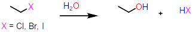
- @Epoxide_group → di-alcohols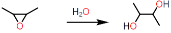
- @Carboxylic_esters → @Carboxylic_acid + alcohol 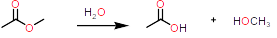
- @carboxylic_anhydride → carboxylic acid 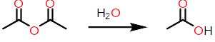
- @Amides → carboxylic acids + @Amine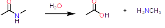
- @urea → amines + CO2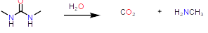
- @carbamates → amines + alcohol + CO2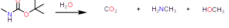
Reactions
| Reaction | Speed | Because | Happens in nature |
|---|---|---|---|
| SN1 | Tertiary halides react very fast with water | Solvent is polar | |
| SN2 | Rarely (water is unreactive) | ||
Alkyl Halides
@Alkyl_halides are generally poorly soluble in water → chemicals used as @Insecticide build up in animal fats → @bioaccumulation
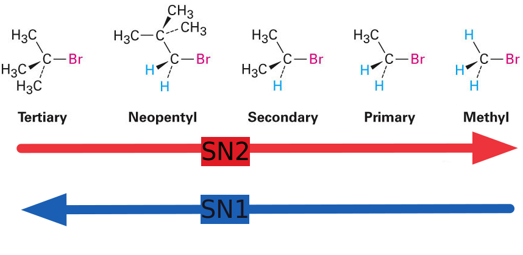
Halogens on a Methyl skeleton are more reactive than @tertiary_substrate in an @SN2_Reaction , but SN2 reactions do not happen often in nature
Remember that @SN1_reactions have the opposite order of reactivity → tertiary alkyl halides break down the fastest in the environment.
@Neopentyl skeletons are very unreactive in both:
- In an SN1 reaction: an unstable @Primary_substrate @carbocation is formed as the intermediate @transition_state
- In an SN2 reaction, the big block of CH3 groups blocks @Nucleophile attack on the carbon
Bicyclic Molecules
@Bicyclic_molecules are molecules with two rings which can be joined in a number of ways:
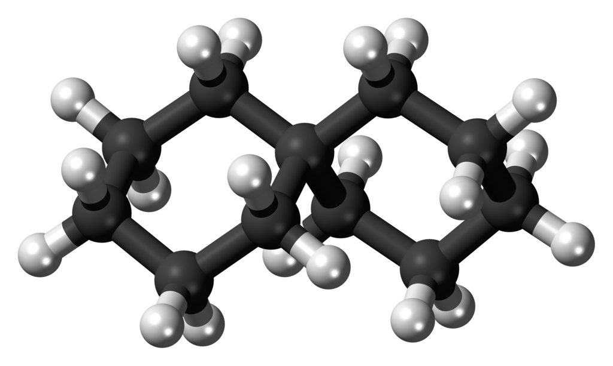
⬇️In @Spirocyclic_molecules the rings share one atom
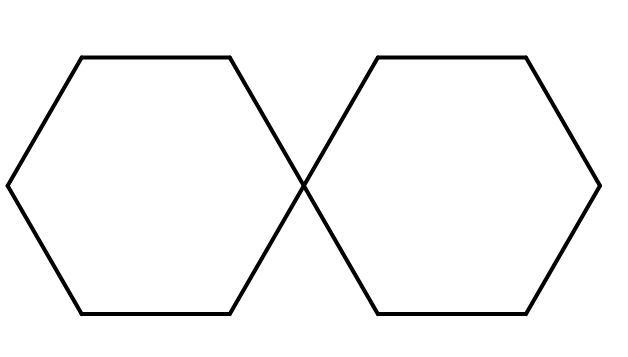
⬇️In a @Fused_bicyclic_molecule the rings share a covalent bond. The two atoms connecting them are known as @bridgegead_atoms (labelled B)
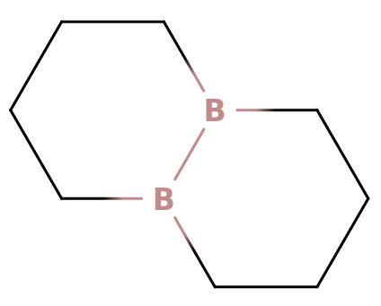1
⬇️In a @bridged_bicyclic compound, the rings share 3 or more atoms, but the bridgehead atoms are separated by a bridge.
⬇️ @Pesticide often have bridges which makes them more effective, but makes then less easy to degrade in the environment. This is because the @carbocation can't be planar because of the rings → it can't achieve SP2 @Hybridisation
It also can't be degraded by @SN2_Reaction because the nucleophile would have to attack from the side where the ring is.
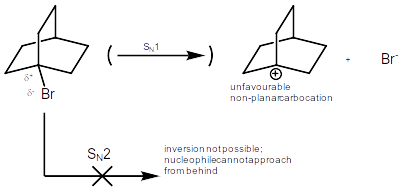
Multiple halogens
Having multiple halogens attached to the same carbon also makes alkyl halides less reactive
If the halogen is attached to an SP2 @Hybridisation carbon atom, it will be less reactive
Pesticides
Many @Presistent_organic_pollutants have been completely banned because of their lack of break down in the environment.
@Organophosphates @carbamates and @pyrethrins were created as biodegradable pesticides
Oxidation Reactions
@Oxidation reactions deal with @Free_radicals
Oxygen in its @ground_state has 2 @Non_bonding_electrons → it is a @bi_radical called @triplet_oxygen which can be turned into @singlet_oxygen by adding energy.
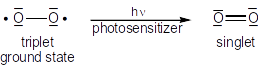
The electron configuration of oxygen⬇️
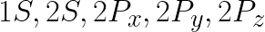
Ozone
@Ozone is a species of triplet oxygen
It absorbs UV radiation from the sun and is present in the @stratosphere
@CFCs react with change ozone into oxygen